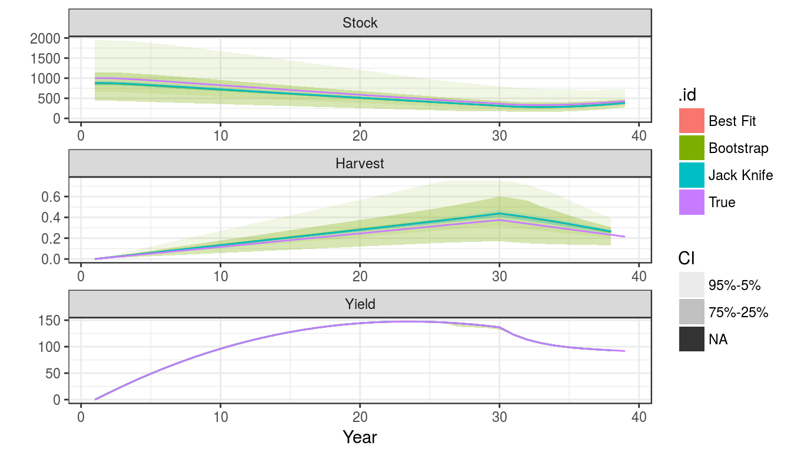
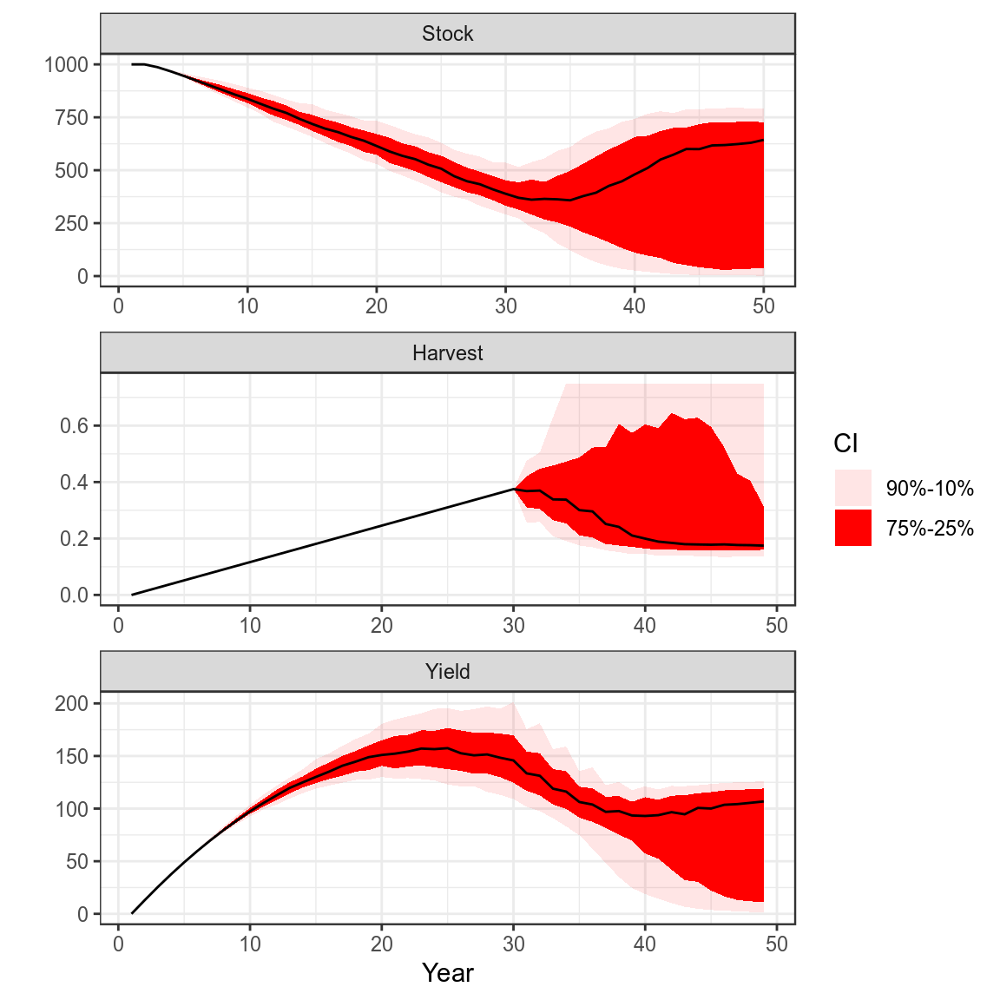
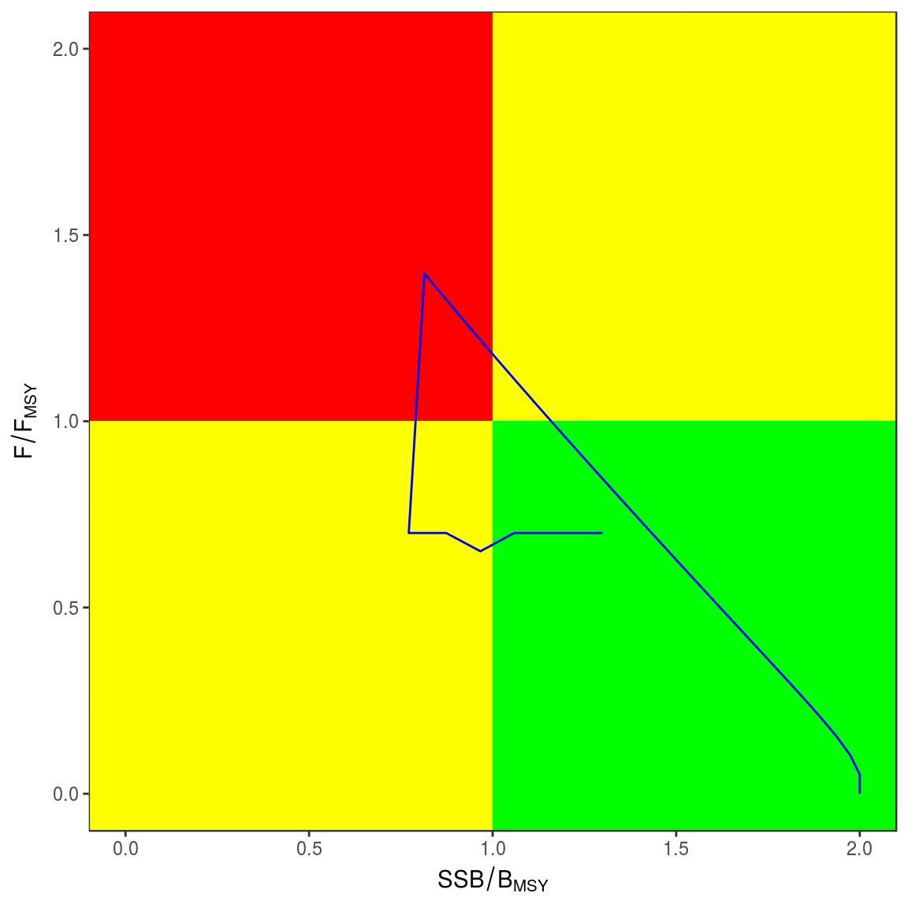

Biomass Dynamic Management Procedures
Laurence Kell
06 December, 2018
Introduction
The mpb package implements biomass based methods for stock assessment and simulation testing using Management Strategy Evaluation (MSE).
The main processes influencing the dynamics of exploited populations are gains due to growth and recruitment and losses due to fishing and natural mortality. In a biomass dynamic stock assessment model recruitment, growth and natural mortality are simplified into a single production function (\(P\)), for example that of (Pella and Tomlinson 1969).
The dynamics are determined by the population growth rate (\(r\), in the abscence of density dependence) and the shape of the production function (\(p\)). if \(p=1\) then the maximum sustainable yield (MSY) is found halfway between 0 and virgin biomass (\(K\)); as p deccreases MSY shifts to the left. There is seldom suffcient infomation in the catch data to estimate even these few parameters and so additional data are required, e.g. time series of relative abundance from catch per unit effort (CPUE), or surveys.
The provision of fisheries management advice requires the assessment of stock status relative to reference points, the prediction of the response of a stock to management, and checking that predictions are consistent with reality. Biomass dynamic models have been criticised as being too simplistic to capture the actual population dynamics, however, if a simple model can provide robust advice on stock status and the response of a stock to management why use anything more complicated (Ludwig and Walters 1985)? For example the Pella-Tomlinson model is used by the IWC to set catch limits. Neither the form of the model nor its parameters are meant to provide an accurate representation of the dynamics of the population. Rather, it has been demonstrated by simulation that when a biomass dynamic model is used as part of a management strategy with a harvest control rule (HCR) it allows the robust calculation and setting of catches limits (Butterworth and Punt 1999).
biodyn Class
The main class is biodyn, which has methods for importing data, exporting results, fitting models, checking diagnostics, plotting, estimation of uncertainly, projection, simulating HCRs, and for the provision of advice. The robustness of the methods can be simulation tested using MSE. biodyn also includes slots for catch, parameters, historical stock status, reference points, diagnostics, and summary statistics (use ??biodyn for more information)
An object can be created in various way, e.g. using the constructor
bd=biodyn()or by coercion from another class
data(ple4)
bd=as(ple4,"biodyn")or using an existing text file such as the input file of ASPIC and then coercing the aspic object into an object of the mpb class
asp=aspic("aspic.inp")
bd =as(asp,"biodyn")Objects for use in simulation can also be created
bd=sim()Plotting
are important for examining objects, exploring data, summarising results, checking outputs, and diagnosing problems.
bd=window(sim(),end=49)
plot(bd)+
theme_bw()Production function with simulated time series
mpb uses ggplot2 as this allows the basic plots to be modified as required, for example a trajectory can be added to the plot of the production function
plotProduction(bd)+
geom_path( aes(stock,catch),
model.frame(FLQuants(bd,"stock","catch")))+
geom_point(aes(stock,catch),
model.frame(FLQuants(bd,"stock","catch")))+
theme_bw()+theme(legend.position="none")Simulated CPUE series
Estimation
can be done using either maximum likelihood or Monte Carlo Markov Chain (MCMC) simulations. Simulation can help to check robustness by allowing estimated values to be compared with the ones used to generate the data.
bd=sim()A CPUE series is needed for fitting and can be simulated using mid year biomass and adding error.
cpue=(stock(bd)[,-dims(bd)$year]+
stock(bd)[,-1])/2
set.seed(7890)
cpue=rlnorm(1,log(cpue),.2)
ggplot(as.data.frame(cpue))+
geom_point(aes(year,data))+
geom_line(aes(year,data),col="salmon",
data=as.data.frame(stock(bd)))+
theme_bw()Simulated CPUE series
Starting values for the parameters are required. The defaults assume that \(r\) is 0.5, the production function is symetric (i.e. p=1) and the \(b0\) ratio of the initial biomass to \(k\) is 1. MSY should be the same order of magnitude as the catch and so carry capacity (\(k\)) can be calculated if a guess for \(r\) is provided.
params(bd)["k"]=guessK(params(bd)["r"],mean(catch(bd),na.rm=T),params(bd)["p"])Parameters are also required for catchability (\(q\)) and the CV for the CPUE indices; if the population parameters are known then the stock can be calculated from the catch and initial values for \(q\) and the CV derived.
setParams(bd)=cpue
params(bd)An object of class "FLPar"
params
r k p b0 q1 sigma1
0.500 818.740 1.000 1.000 0.993 0.202
units: NA Before fitting the control slot has to be provided with the initial guesses, upper and lower bounds (min and max), and the phase for each parameter.
setControl(bd)=params(bd)
control(bd)An object of class "FLPar"
option
params phase min val max
r 1.0000 0.0500 0.5000 5.0000
k 1.0000 81.8740 818.7397 8187.3967
p -1.0000 0.1000 1.0000 10.0000
b0 -1.0000 0.1000 1.0000 10.0000
q1 -2.0000 0.0993 0.9925 9.9254
sigma1 -2.0000 0.0202 0.2021 2.0214
units: NA Difficult to estimate parameters may be fixed by setting the phase (e.g. for \(B_0\) and p) to <0, while parameters can be sequentially estimated by setting phase >0.
Maximum Likelihood
can be performed using maximum likelihood
control(bd)["r",1]=2
bdHat=fit(bd,cpue) Since the true parameter values are known the fit can be checked
params(bdHat) An object of class "FLPar"
params
r k p b0 q1 sigma1
0.567 897.301 1.000 1.000 1.091 0.200
units: NA params(bdHat)/params(bd)An object of class "FLPar"
params
r k p b0 q1 sigma1
1.135 1.096 1.000 1.000 1.099 0.988
units: NA plot(as(list("True"=bd,"Hat"=bdHat),"biodyns"))+
theme(legend.position="bottom")+
theme_bw()A comparison of the true and fitted time series
Diagnostics
diagnostics are important for replicability, by ensuring that a global solution has actually been found and that assumptions arnt violated, so when the assessment is repeated you get a similar result.
Residuals
Patterns in residuals from the fits of the CPUE to stock abundance may indicate a violation of models assumptions. Which may result in biased estimates of parameters, reference points and stock trends. While variance estimates obtained from bootstrapping assume that residuals are Independently and Identically Distributed (i.i.d.).
The residuals are in the diags slot.
head(bdHat@diags)| name | year | obs | hat | residual | residualLag | qqx | qqy | qqHat |
|---|---|---|---|---|---|---|---|---|
| 1 | 1 | 1061 | 979 | 0.081 | -0.139 | 0.206 | 0.081 | 0.031 |
| 1 | 2 | 846 | 972 | -0.139 | -0.176 | -0.478 | -0.139 | -0.132 |
| 1 | 3 | 800 | 955 | -0.176 | 0.119 | -0.723 | -0.176 | -0.191 |
| 1 | 4 | 1051 | 933 | 0.119 | -0.056 | 0.478 | 0.119 | 0.096 |
| 1 | 5 | 861 | 911 | -0.056 | 0.107 | -0.206 | -0.056 | -0.067 |
| 1 | 6 | 988 | 887 | 0.107 | 0.170 | 0.366 | 0.107 | 0.069 |
Checking the distribution of residuals can be done by plotting the obsevered quantiles against the predicted quantiles from the assumed distribution using Q-Q plots. These compare a sample of data (the residuals) on the vertical axis to a statistical population (e.g. from a normal distribution) on the horizontal axis. Any nonlinear patterns may imply that the data are not normally distributed i.e. \(X ~ N(0,1)\), for example a systematic departure from a straight line may indicate skewness or over or under dispersion.
rsdl=bdHat@diags
ggplot(rsdl) +
geom_point( aes(qqx,qqy)) +
stat_smooth(aes(qqx,qqHat),method="lm",se=T,fill="blue", alpha=0.1) +
theme_bw()+theme(legend.position="bottom") Quantile-quantile plot to compare residual distribution with the normal distribution.
It is assumed that an index is proportional to the stock so when plotting the observed against the fitted values the points should fall around the \(y=x\) line, if they do not then the index may not be a good proxy for the stock trend.
library(diags)
ggplot(with(rsdl, data.frame(obs=diags:::stdz(obs),hat=diags:::stdz(hat)))) +
geom_abline(aes(slope=1,intercept=0)) +
geom_point( aes(obs,hat)) +
stat_smooth(aes(obs,hat),method="lm", se=F) +
theme_bw()+theme(legend.position="bottom") +
xlab("Fitted") + ylab("Observed")Observed CPUE verses fitted, blue line is a linear resgression fitted to points, black the y=x line.
To look for systematic patterns the residuals can be plotted by year, a lowess smoother helps to identify if the proxy doesnt agree with the estimated stock trend based on the catch
dat=transform(subset(rsdl,!is.na(residual),
residual=diags::stdz(residual,na.rm=T)))
ggplot(aes(year,residual),data=dat) +
geom_hline(aes(yintercept=0)) +
geom_point() +
stat_smooth(method="loess",se=F) +
theme_bw()+theme(legend.position="bottom") Residuals by year, with lowess smoother
It is also assumed that variance of the index does not vary with the mean, this can be checked by plotting the residuals against the fitted values.
ggplot(aes(hat, residual),
data=subset(rsdl,!is.na(hat) & !is.na(residual))) +
geom_hline(aes(yintercept=0)) +
geom_point() +
stat_smooth(method="loess",se=F) +
theme_bw()+theme(legend.position="bottom") Plot of residuals against fitted value, to check variance relationship.
It is assumed that the residuals are not autocorrelated, which can be checked by plotting the residuals against each other with a lag of 1. Significant autocorrelations could be due to an increase in catchability with time, which may result in a more optimistic estimate of current stock status as a decline in the stock may be masked by an increase in catchability.
sum(rsdl$residual^2)[1] 1.96ggplot(rsdl) +
geom_point( aes(residual,residualLag)) +
stat_smooth(aes(residual,residualLag),method="lm",se=F) +
geom_hline(aes(yintercept=0)) +
xlab(expression(Residual[t])) +
ylab(expression(Residual[t+1])) +
theme_bw()+theme(legend.position="bottom") Plot of autocorrelation, i.e. \(residual_{t+1}\) verses \(residual_{t}\).
Profiles
Likelihood profiles are useful to check that you are actually at a global solution and not stuck on a small hill with your back to the mountain. They are also useful for evaluating the infomation content of the data and whether different data sets are telling you different things and you need to ask more questions to determine the truth.
The control slot can be used to produce a profile, i.e. fix a parameter or parameters for a range of values and then find the maximum likelihood by estimating the other parameters.
1D
bdHat=fit(bdHat,cpue)
setControl(bdHat)=params(bdHat)
res=profile(bdHat,which='r',fixed=c('b0','p'),range=seq(0.95,1.03,.002))[1] 1ggplot(subset(res,ll<0))+
geom_line(aes(r,ll)) +
theme_bw()Likelihood profile for r
control(bdHat)["r","phase"]=1
bdHat=fit(bdHat,cpue)
setControl(bdHat)=params(bdHat)
res=profile(bdHat,which='k',fixed=c('b0','p'),range=seq(0.95,1.03,.002))
ggplot(subset(res,ll<0))+
geom_line(aes(k,ll)) +
theme_bw()Uncertainty
A main objective of stock assessment is to estimate uncertainly in stock status. This requires estimates of distributions as well as point estimates. As an example a catch and cpue are simulated and fitted using biodyn.
bd =window(sim(),end=39)
cpue=(stock(bd)[,-dims(bd)$year]+
stock(bd)[,-1])/2
set.seed(7890)
cpue=rlnorm(1,log(cpue),.2)
bdHat=bd
setParams( bdHat)=cpue
setControl(bdHat)=params(bdHat)
bdHat@control[3:4,"phase"]=-1
bdHat=fit(bdHat,cpue)
sims=as(list("True"=bd,"Best Fit"=bdHat),"biodyns")There are various ways to estimate undercertainty in parameter estimates and quantities derived from them, i.e. use the covariance matrix provided by a maximum likelihood fit, bootstrapping, the jack knife or Bayesian methods such as Monte Carlo Markov Chain,
Variance/Covariance Matrix
Fitting using maximum likelihood provides the covariance matrix for the parameters. Only the \(r\) and \(k\) are of interest, as \(p\) and \(b0\) were fixed and \(q\) and \(sigma\) are nusiance parameters, i.e. are not of immediate interest but which must be accounted for in the analysis.
v=vcov( bdHat)[c("r","k"),c("r","k"),1]
params(bdHat)[c("r","k")]An object of class "FLPar"
params
r k
0.578 882.149
units: NA #refs=mvn(500,p,v)The Bootstrap
The Bootstrap can be used to simulate CPUE series replicates and the model refitted.
set.seed(7890)
cpueBoot =boot(bdHat)
sims["Bootstrap"]=fit(bdHat,cpueBoot)Jack knife
The Jack knife is a relatively quick procedure
bdJK =fit(bdHat,FLQuant(jackknife(cpue)))
sims["Jack Knife"]=bdJKplot(sims)+
theme_bw()
Stock Status
The Precautionary Approach requires stock status to be estimated relative to reference points. The covariance matrix can be used to estimate uncertainty in derived quantities, i.e. those used for management such as \(F:F_{MSY}\).
Marginal densities for stock
boot=stock(sims[["Bootstrap"]])[,39]
set.seed(7890)
jack=randJack(500,stock(sims[[ "Best Fit"]])[,39],
stock(sims[["Jack Knife"]])[,39])
bnow=rbind(data.frame(Method="boot",stock=c(boot)),
data.frame(Method="jack",stock=c(jack)))
ggplot(bnow)+
geom_density(aes(x=stock, y=..count..), position = "stack",fill="red")+
facet_wrap(~Method,scale="free_y",ncol=1)+
geom_vline(aes(xintercept=c(stock(sims[["Best Fit"]])[,"39"])))+
theme_bw()Kobe Phase Plot
library(kobe)
kb=rbind(data.frame(Method="Boot",kobe(sims[["Bootstrap"]], what="pts")),
data.frame(Method="Jack",kobe(sims[["Jack Knife"]],what="pts")))
ggplot(kb)+
geom_point(aes(stock,harvest))+
facet_wrap(~Method,scale="free_y",ncol=1)+
theme_bw()Projections
Once stock parameters and status has been estimated then projections need to be conducted to inform management.
set.seed(7890)
harvest=rlnorm(100,log(harvest(bdHat))[,-dims(bdHat)$year],.1)
bdHat =fwd(bdHat,harvest=harvest)
plot(bdHat,worm=c(2,8))+
theme(legend.position="bottom")+
theme_bw()Projection
Harvest Control Rules
Use simulated data to run annual, tri-annual, F bound and TAC bounded HCRs
Annual
bd=window(sim(),end=29)
for (i in seq(28,49,1))
bd=fwd(bd,harvest=hcr(bd,yr=i-1,hyr=i+1:2))
simHCR=as(list("Annual"=bd),"biodyns")Tri-annual
bd=window(bd,end=29)
for (i in seq(28,49,3))
bd=fwd(bd,harvest=hcr(bd,yr=i,hyr=i+1:3))
simHCR["Triennial"]=bdBound on F
bd=window(bd,end=29)
for (i in seq(28,49,3))
bd=fwd(bd,harvest=hcr(bd,yr=i,byr=i,hyr=i+1:3,bndF=c(0.9,1.1)))
simHCR["bound F"]=bdBound on catch
bd=window(bd,end=29)
for (i in seq(28,49,3))
bd=fwd(bd,catch =hcr(bd,yr=i,byr=i-1,hyr=i+1:3,tac=TRUE,bndTac=c(0.9,1.1)))
simHCR["bound TAC"]=bdplot(simHCR)+
theme_bw()+
theme(legend.position="bottom")Plots of projections
Process Error and Harvest Control Rule
set.seed(7890)
pe=rlnorm(500,FLQuant(0,dimnames=list(year=1:50)),0.5)
bd=window(sim(),end=30)
bd.=bd
bd@stock =propagate(bd@stock, 500)
bd=fwd(bd,harvest=harvest(bd)[,2:30],pe=pe)
for (i in seq(30,48,1))
bd=fwd(bd,
catch=hcr(bd,yr=i,hyr=i+1,tac=TRUE,bndTac=c(0.9,1.1)),
pe =pe)
plot(bd)+
theme_bw()
Advice
library(plyr)
library(mpb)
library(reshape)
library(kobe)
trks=kobe(simHCR[["Annual"]],what="trks")
kobePhase()+
geom_path( aes(stock,harvest),col="blue",data=subset(trks,pctl=="50%"))
trks=ldply(simHCR,kobe,what="trks")
kobePhase()+
geom_path( aes(stock,harvest,col=.id),data=subset(trks,pctl=="50%"))
MSE
mseBiodynReferences
Butterworth, DS, and AE Punt. 1999. “Experiences in the Evaluation and Implementation of Management Procedures.” ICES J. Mar. Sci. 56 (6). Oxford University Press: 985–98.
Ludwig, Donald, and Carl J Walters. 1985. “Are Age-Structured Models Appropriate for Catch-Effort Data?” Can. J. Fish. Aquat. Sci. 42 (6). NRC Research Press: 1066–72.
Pella, J.J., and P.K. Tomlinson. 1969. A Generalized Stock Production Model. Inter-American Tropical Tuna Commission.